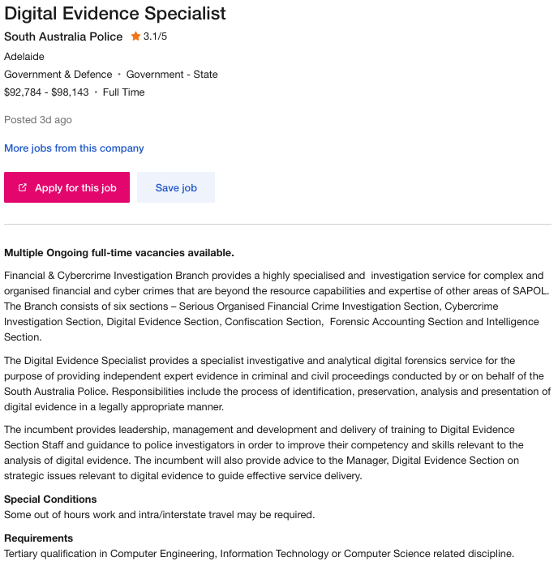
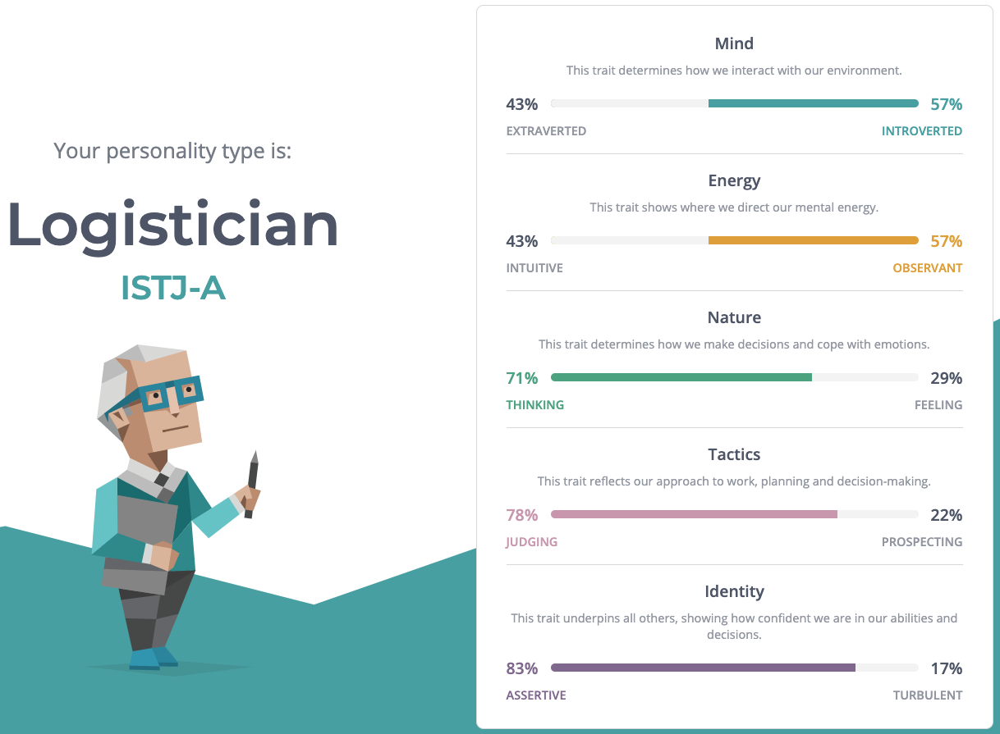
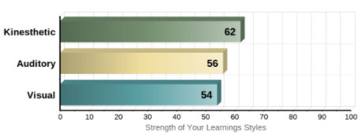
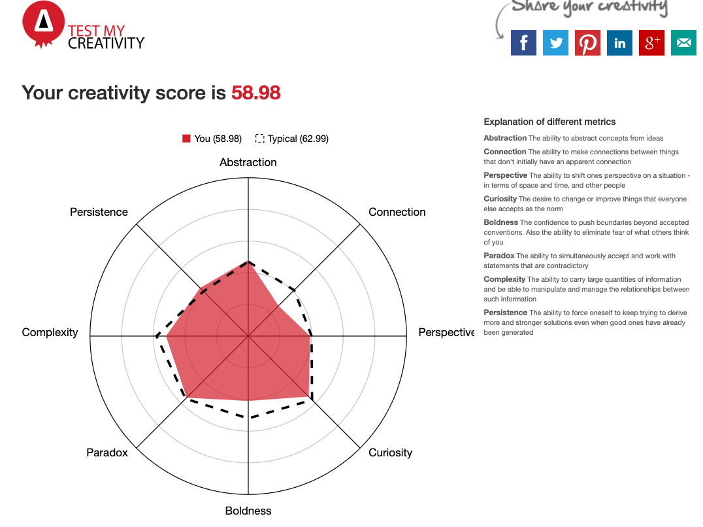

I was born in Perth, Western Australia 23 years ago. The highest level of education that I have achieved to date is a Bachelor’s degree in Criminology, where my major was Criminal Behaviour, and a Bachelor’s Degree in Global Security, where my major was Terrorism and Counterterrorism Studies. My favourite hobbies at the moment are spending time with my girlfriend, hanging out with my family, and playing tennis. Despite my best efforts to learn another, the only language I speak is English.

Andrew McKenna
- Student Number: s3916945
- Email me: s3916945@student.rmit.edu.au
- My GitHub Profile: www.github.com/pseudonym-git
About Me
My Interest in IT
I have been interested in IT for as long as I can remember. Since I started high school, I was the go-to IT person for my family, I set up Wi-Fi modems, network printers, computers, and I could generally help if anyone was having any trouble with anything. Over the years as I learned more and more about computers and the IT field in general, I gradually reached the point where I realised just how much I didn’t know or understand at all. The real moment when I decided I was going to go back to UNI and study IT was after listening to a guest lecturer speak about cybercrime in the last year of my other degree. The whole lecture fascinated me, but the lecturer said one line that really got me interested and it was that “anything that runs code can be hacked”. The whole lecture had me more engaged than almost any other I’d listened to and I realised that I really wanted to learn more.
I chose to study at RMIT mostly because I knew I wanted to study online. I think online learning gives you much more flexibility than needing to attend lectures and classes in person. I chose RMIT specifically because, of all the online IT degrees I looked at, theirs was the one of the only ones that specifically listed coding as a core part of the degree, and that made the degree look like the most well rounded and interesting to me.
I hope to learn everything I can about programming, security and cybercrime. I think those are the topics that interest me the most at the moment, but as I learn more about the other fields available that may change.
My Ideal Job
My Ideal Job at the moment would be something like this. This role is working for the South Australian Police Financial and Cybercrime Investigation Branch, and involves identifying, recovering, and investigating evidence of digital evidence in crimes. The requirement of the position is a tertiary degree in IT or a related discipline, which I will have at the conclusion of this current degree with further training to be conducted on the job. This job appeals to me as it combines a number of my interests and past and present study into one job. I have already a solid foundation law and requirements for evidence from my criminology degree, and the role directly engages with the area that inspired me to study IT. I believe that I could apply for a job like this as soon as I graduate as I will have met the necessary requirements. Should the link in the paragraph no longer be available, please find a screenshot below.
Personal Profile
As part of this assignment, I did three tests: a Myers-Briggs type personality test, an online learning style test, and a creativity test.
The results of my Myers-Briggs test were that my personality type is ISTJ-A. This test showed that I am slightly more introverted than extroverted, and slightly more observant than intuitive, significantly more thinking focussed than I am feeling focussed, am significantly more judging than I am prospecting, and significantly more assertive than I am turbulent. The test showed that I am cooperative, practical and grounded, with a tendency to be self-motivated, but my weaknesses make me more likely to be stubborn, judgemental, and to always do things by the book.
The second test I did was a learning style test. This test found that my learning style is very evenly balanced between kinaesthetic, auditory and visual, with kinaesthetic being slightly dominant over the others. As is fairly common knowledge, kinaesthetic learners learn by doing things, auditory with their sense of hearing, and visual with their eyes.
The third test I did was an online creativity test. This test disappointed me a little but didn’t really surprise me, as it found that I am less creative than average. As you can see from the picture of the test results, I am less able to make connections and less likely to push boundaries than average, but I am slightly more persistent.
I believe that these results are mostly accurate when assessing my personality and creativity. I think that the benefit in doing these tests is in exposing where I am lacking and where I have the greatest room to improve. For example, now that I am aware of the weaknesses of my ISTJ-A personality type, I am going to do my best to improve how I interact with others and to try and be more flexible to changes in plans. The learning styles test was really interesting to me, and mostly fit with what I was expecting to find out. The creativity test was a little disappointing, but just like the Myers-Briggs test, gives me clear ideas about where I can work to improve.
In a group work context, I think that my results will make me a capable, dependable team member, but I may not always have the most creative and brilliant ideas. I know that I will need to make sure I am flexible and fit in with whatever my team needs me to do and will do to the best of my ability. The weaknesses found in my personality test mean that I would be best paired with someone who can be a bit more creative and bolder to compensate for where I lack.
My Project Idea
My project idea is for a questionnaire program that runs in the Python shell to calculate the user’s actual risk of being a victim of a crime. To almost everyone, criminology students included, crime statistics are hard to understand and practically meaningless to apply to anyone. My program idea would change that by asking the user questions, and using those responses, interpreting the actual risk as a percentage using crime statistics stored as variables. This would mean that each user would get an accurate picture of their risk of crime based on data like the demographic they are in, the suburb they live in, whether they have been a victim of a crime recently, etc. I also intend for this program to, also based on user responses, print a list of the crimes that the user will most likely be a victim of and give suggestions to reduce their risk of crime. It could also return links to explanations of criminology theory if the user is interested.
My motivation to create this program comes from my experience studying fear of crime in criminology, and from my experience in moving house. Fear of crime is essentially the public’s perception of their likelihood of being a victim of a crime. Both conventional media like newspapers and news programs, and social media have been shown to increase fear of crime far beyond the actual risk. One of the first things I did when moving house was to look at crime statistics in the area I was going to move to. I know I’m not alone in doing this as my girlfriend’s mum also looked at them when she was considering moving too. You hear it all the time when someone is moving; “Is that a good area” so when this assignment came along, I thought of doing something like this straight away.
My program, which would run from the python shell, would ask the user questions. User answers would trigger an if condition, which would then determine which variable would be assigned to their risk percentage. Each answer that they give would either increase or decrease their risk. At the end of the questionnaire the program would print their risk as a percentage, along with a list of the top three crimes that they are most likely to be a victim of, and, based on this list, suggestions on how to reduce their risk. For example: if a user enters that they are male, 18-25, and live in Armadale in Western Australia, the program will look at what crime statistics are applicable to males of that age range, in that area. It would then print the three crimes that the user is most likely to be a victim of and display them, most likely violent crimes like assault. It would then give a suggestion on how to minimise the risk of assault, for example, ‘avoid bars and places where alcohol is served, especially on days where there is a UFC or Boxing match being played there’.
In terms of tools and technologies that are required to create my project, it is really simple. Initially requiring only the python shell and a text editor to run and program, and GitHub to collaborate with other team members. It could be created as an app with a Graphical User Interface while retaining the same questionnaire style, but I am not sure how that would be created as I have no experience with programming a GUI.
The skills required to create my project are fairly straightforward too. For the initial idea to run the program in the python shell I think it could be done with the skills I and others have already learned in the Introduction to Programming unit at RMIT. The complex part of the project, at least from my perspective, would be creating the GUI.
My hope for this program is to make crime statistics actually accessible to everyone who is interested without the extra work of trawling through everything published by the Australian Bureau of Statistics. I hope the project would also make the statistics relevant to the user, instead of just being abstract. I think that a personalised estimate of a person’s risk of crime would help with the phenomenon of fear of crime in the community. Finally, and perhaps most importantly, I hope that the suggestions given by the program can do some good and prevent crimes.